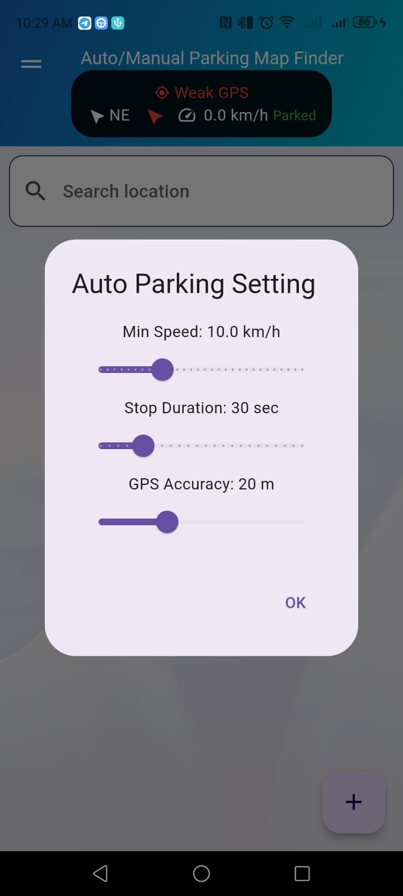
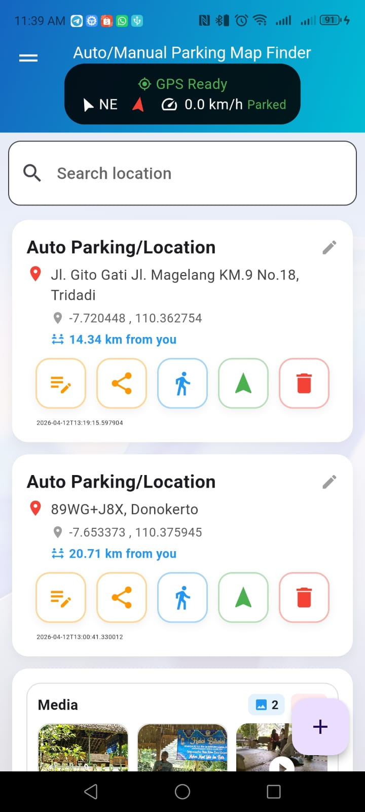
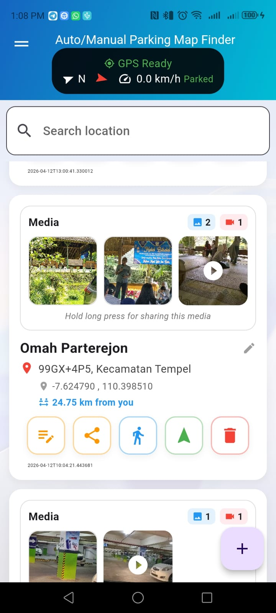
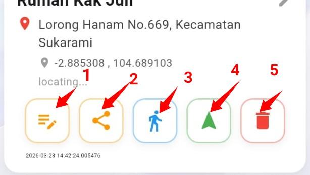

Manual Operation
Last updated: 2026
```This application ("App") is developed to help users save and manage parking locations, including optional photo and video records and backup to Google Drive.
Auto/Manual Parking Map Finder
This app can be run automatically or manually simultaneously
- When you drive with this application, the speed (km/h) will show the speed of your vehicle in APP BAR
- If the speed (km/h) exceeds the min speed listed in the "Auto Parking Setting" menu, then Auto Parking will work.
- (Speed (km/h) > Min Speed and Stop Duration > Default Value in the setting menu)
Speed Vehicle in App BAR 
Auto Setting in menu 
You can click the plus button in the bottom right corner to start manual parking.
In this menu select the parking location automatically or manually on the map.
Apart from that, you can also take unlimited pictures or videos with your smartphone camera and click save for saving this moment
Auto Parking 
Manual Parking 
Both of them can have their titles edited
Control/Menu in List 
11. Contact
Email: murjayanto2007@gmail.com
```